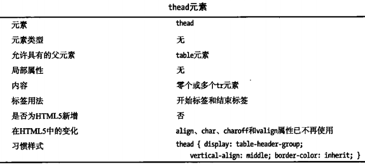

表格的构造
1、生成基本表格table、tr、td
table元素表示整个表格，tr元素表示一行，td元素表示一个单元格。
2、添加表头单元格th
一行中可以混用td和th元素
3、添加表格结构thead、tfoot、tbody
thead表示表格的标题行；tfoot元素标记组成表脚的行；如果没有thead，则所有tr都会视为表格主体——tbody的一部分，即使文档中没有插入tbody，大多数浏览器会自动插入tbody，这时可能导致table>tr这类选择器失效。

4、制作不规则表格
使用td和th元素的属性来实现，跨列使用rowspan属性，跨行使用colspan属性，其值为整数，单位为行数或列数，存在上限。若值为百分比，则有些浏览器将100%代表整行或整列，但这不是H5标准的内容，没有得到一致实现。
5、表头与单元格的关联
将td和th元素的headers属性设置为对应表头单元格的id属性值
6、添加表格标题caption
一个表格只能包含一个caption元素，其无论定义在表格的什么地方，都会居中显示在表格上方。
7、基于列处理表格
HTML表格是基于行的，对列应用样式有点不便，解决方法是使用colgroup和col元素。
8、添加表格边框border
9、表格制作案例